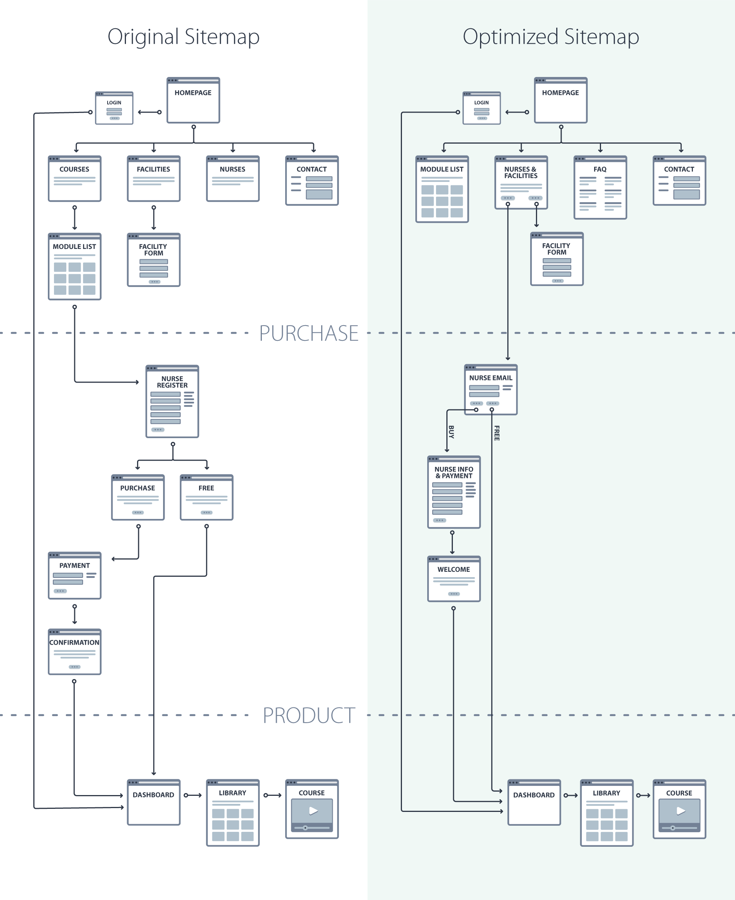

Vohra Wound Physicians is considered to be the premier wound care physician group in the United States. Their core business relies on physicians conducting weekly bedside consultations for patients with chronic wounds. They also created a certification program for nurses looking to expand their knowledge in treating chronic wounds. That’s where I came in.
The online certification program was initially built as a pilot product. Within two years and with minimal attention to it, every month they were selling a decent number of online courses. The company knew it was time to improve their user experience to make a more profitable digital product. That’s when they hired their first UX/UI in the company – that's me.
After the initial discussion with the project owner and other stakeholders, I noted 4 challenges that were not negotiable:
1. No New Content
Because the certification program was a relatively small product within the company, the resources were limited, very limited. That meant no new text content will be written – even if we thought would be beneficial.
2. I Was the Entire Creative Team
They didn’t have any graphic designers, nor defined brand color or guidelines. I knew the importance of having an established identity to be consistent across the experience. So whatever was needed, I had to design it myself.
3. I had to code the front-end myself
The backend developer had the skill to code the mockups I was going to create. However, he was busy with another project. That meant that to deliver on time, I had to provide him the HTML, CSS, JavaScript and needed assets ready to integrate with the existing backend.
4. The certification was going to be 90% more expensive
The courses for the certification was created by practicing doctors, not hired instructors. That was unique in that niche. So the company wanted to increase the price by almost twice as the original cost.
Challenge accepted!
As usual, the first step was to understand the current experience by putting myself in the shoes of the nurses going thru the existing certification process. So I started to research the site and document current flow based on what I found. To break down the project I decided to divide it into two sections:
1. Conversion Experience
Here I was going to focus on the experience that will persuade qualified visitors to purchase our course. The company was going to start testing PPC Campaigns. So I wanted to at least keep the same conversion rate – given the course was going to be almost twice it’s original cost.
2. Course Experience
Our job was not done after we got customers' money. I also wanted to improve the experience of the product after they were purchased. This will help to increase the number of certified users thus, increasing market penetration.
There was no documentation for the current user flows. So I documented all the user-flows I went thru during my experimentation of the existing website. I then discussed with the product owner the user flow nurses would have to follow to complete the purchase. Everything seems to be aligned with him. However, after discussing it separately with the original developer, some not so obvious business rules were missing. After several versions, we all felt confident I had a real diagram for the current user journey of how the users could purchase their course.
At that point, it became evident in some areas we could improve the users’ experience. For example, users were able to create new accounts for free, but they were not able to do anything inside once they got access. Users still needed to purchase the program before they can see anything about the courses for the certification. My question to the project owner and stakeholder was, “how would you feel to give your contact information to a company in exchange of nothing.” I proceeded to explain each piece of information should be considered a transaction. Like that, I was able to find other small opportunities we could improve to increase conversion rate.
Since I was new to that niche, it was critical I get more insight as to the motivations for nurses to purchase the online certification program. Fortunately, I was able to shadow different doctors during their hospitals’ visits. That allowed me to meet in person some of the nurses. I noted their work conditions. I asked them if they were certified. If not, why not. If yes, why they decided to do it. How their work changed afterward. And like that, I was able to get a better idea about their desires and motivations. To compliment my notes, I also worked with the marketing team to send a survey to users that were already certified. I can’t share all the notes, questions or results. But one crucial insight that got me by surprise was:
I was the first UX/UI Designer they have ever hired. So most key stakeholders were not knowledgeable about the standard process in which we go from research to wireframes to lo-fi mockups to hi-fi clickable mockups. Plus, with the tight deadline, I didn’t have time to convince them. I just had to roll up my sleeves and get it done. I have strong branding and design experience. So I was able to use the information gathered thru user interview and survey and quickly go thru different design iterations. Stakeholders were excited to see how we can take it from what it was, to how it could be, by just recycling the existing content.
When I first took the certification course myself, I notice there was no description for each of the modules that were included on the certification. So the title was the only thing the users could use to guess if the topic was of any value to them. Also, it was not easy to keep track of which modules I have completed so I could focus on the ones I still needed. To solve that, I designed individual modules with a unique status system. That way, nurses can quickly know which ones they haven’t completed yet. I decided to keep the same layout format they already saw while considering purchasing the course. That way, they feel more familiar with the layout, and it is easier for them to notice the difference – the labels for the progress status of the individual module.
Even on the video player
We launched the new site halfway thru the last quarter of the year. With the price increase and the holidays around the corner, we were expecting some drop in the revenue generated by the course. However, right after the new year, gross sales started to increase dramatically.